horizontal · acción3 · 256ms
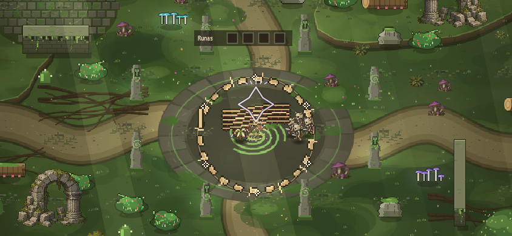

GENERADO / EN_CORRECCION — NO INTEGRAR. Cinco atlas nativos, 60 fases. Preview95ms fijo: diagnóstico, no timing del juego. Tres cierres vacíos intencionales.
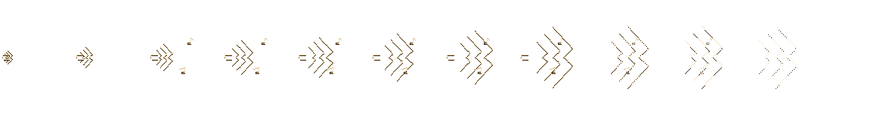
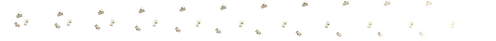
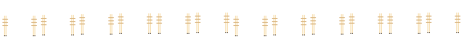
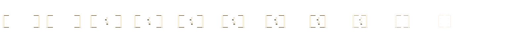
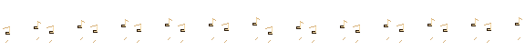
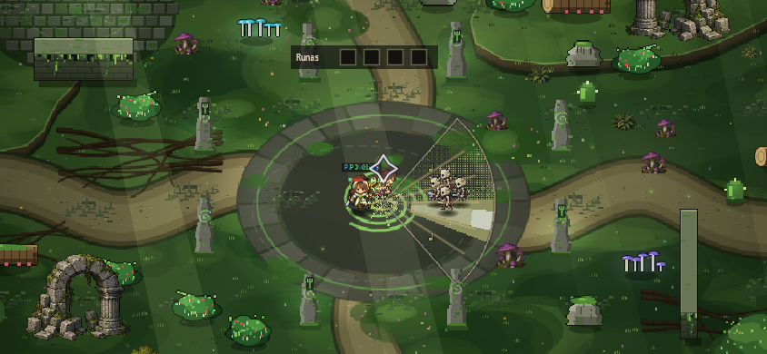
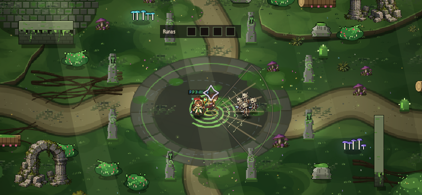
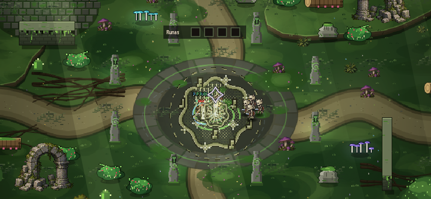
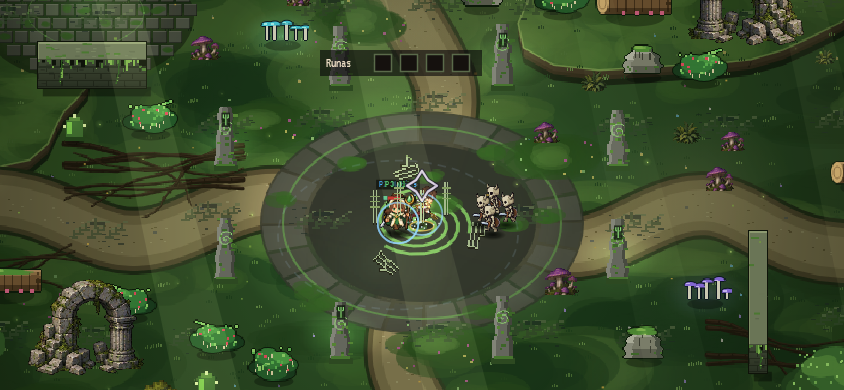
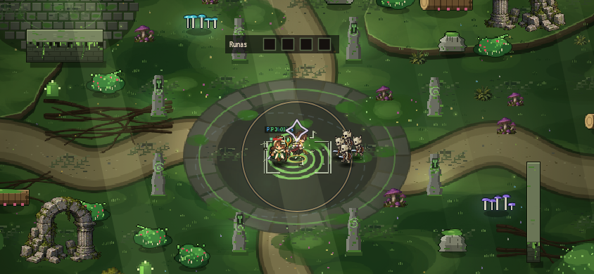

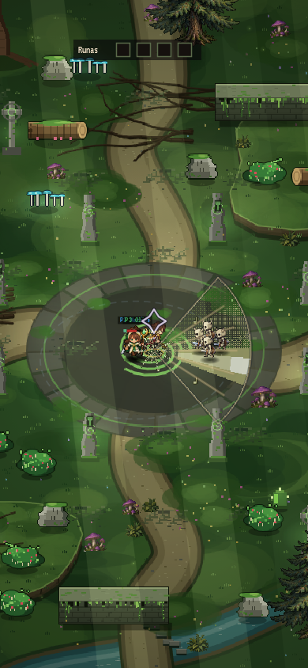
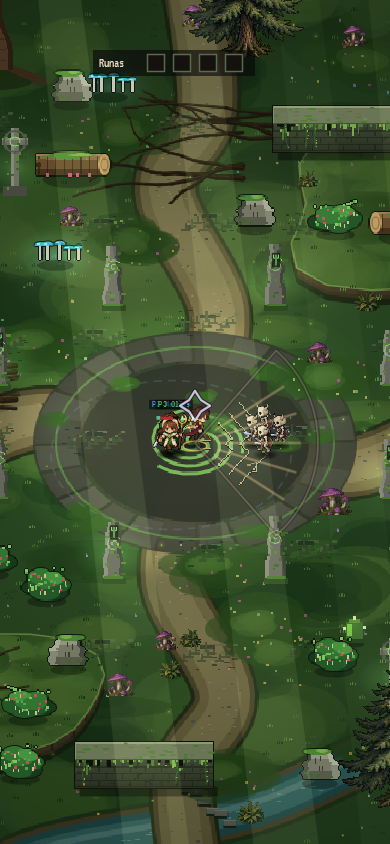
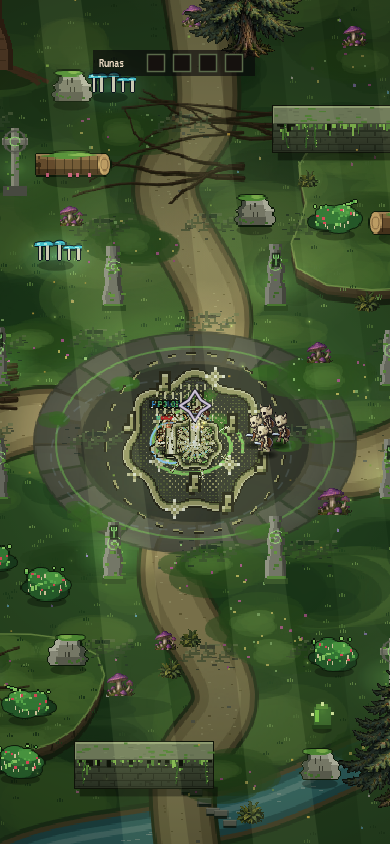
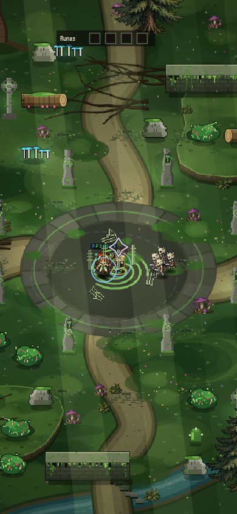
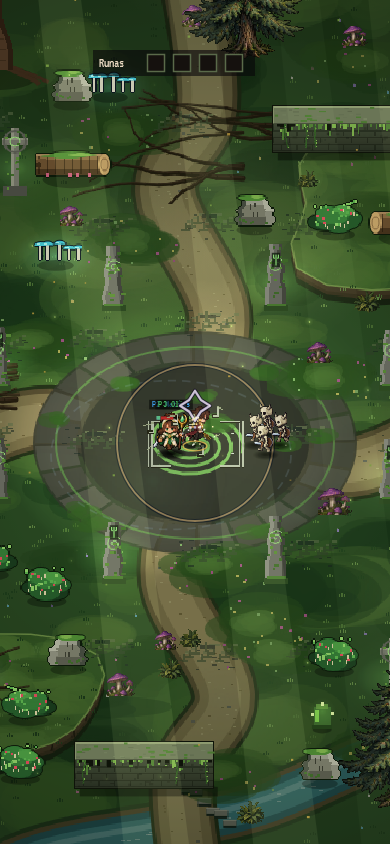

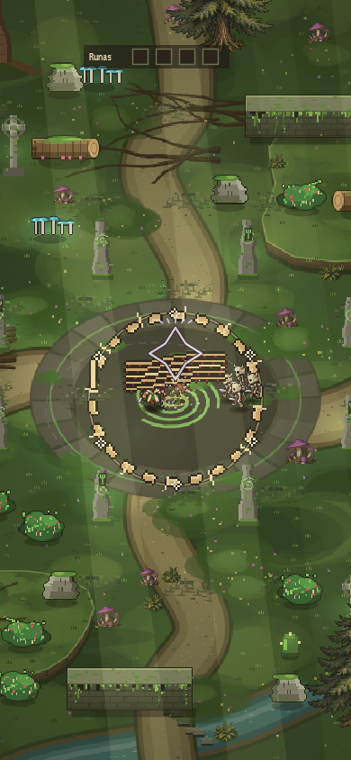